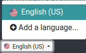
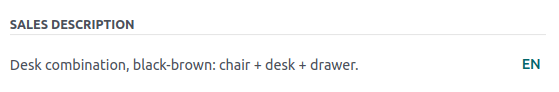

Translations¶
The contents of your website pages (i.e., text strings) can be translated into different languages directly on your website.
Your website is displayed in the language that matches the visitor’s browser’s language, unless that particular language has not been installed. In this case, the website is displayed in the default language. The visitor can still select another language in the language menu.
Installing languages¶
To translate your website, you first have to add the required languages:
Go to your website.
Scroll to the bottom of the page to the language menu.
Click the language and select Add a language.
Click the Languages field and select the required language from the drop-down list. Repeat this step for each additional language.
Click the Add button.
Tip
You can also edit your website’s languages from the backend, in the Settings. Go to and add/remove the required languages in the Languages field, in the Website info section.
Default language¶
If the language of the visitor’s browser is not installed on your website, the content is displayed in the default language.
To define a default language, go to , and select a language in the Default field.
Note
This field is visible only if multiple languages are already configured for your website.
Translating the contents¶
Once the languages have been added, you can translate the contents of your website. To do so, go to your website, select the language from the language menu and click the Translate button on the right part of the task bar to activate the translation mode.

As a result:
Text strings that have already been translated are highlighted in green;
Text strings that need to be translated are highlighted in yellow.

You can then replace the original text with the translation by clicking the block, editing its contents and saving.
Tip
Once the languages have been installed, you can also translate some items (e.g., the product’s name and description) from the backend (e.g., in the product template). To do so, click the language code (e.g., EN) next to the text you want to translate (e.g., the product name) and add the translation.
You can also export/import translations to translate multiple items (e.g., product names and descriptions) in one go.
Language selector menu¶
To add a language selector menu:
Go to your website and click Edit.
Select the block where you want to add the language selector menu (e.g., the header).
Select the Customize tab.
In the Navbar section, set the Language selector field to either Dropdown or Inline.

Click Save.